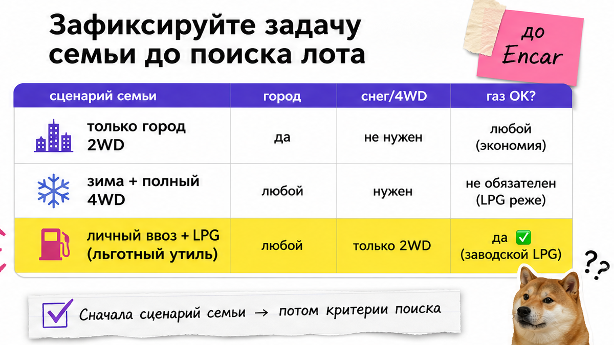
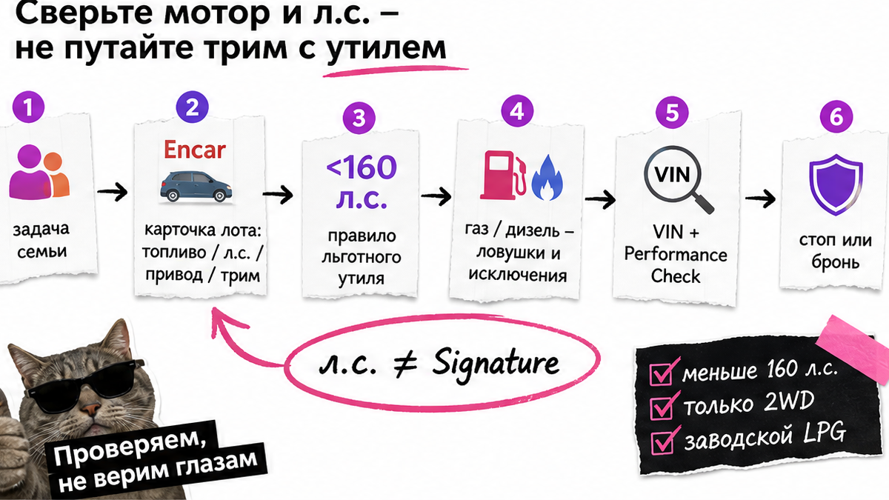
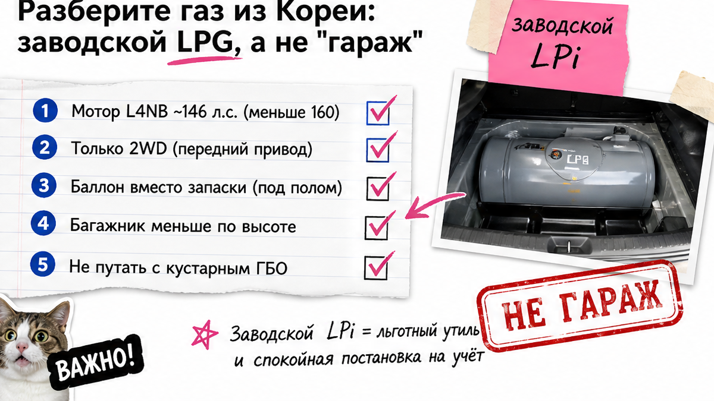

Семья выбрала Sportage Signature на Encar "как у соседа", внесла депозит по фото салона – а в мелочи карточки сидело Gasoline 1.6 T-GDI на 180 л.с. На таможне льготный утильсбор для физлица сорвался: либо коммерческий сбор, либо срочно искать другой лот. Боль типичная: красивая комплектация не равна "лёгкому" ввозу. Ниже – чек-лист до депозита: мотор, газ, привод, Encar и стоп-правила, чтобы вы сами отсеяли лот до перевода денег.
До депозита: Имя трима Prestige / Noblesse / Signature не говорит о льготном утиле. Сверяйте fuel и мощность: заводской 2.0 LPG на 146 л.с. – кандидат под личный ввоз; 1.6 турбо на 180 л.с. и гибрид – коммерческий сценарий. В актуальном каталоге Kia в Корее дизеля в линейке Sportage нет. Депозит – только после VIN, Performance Check, страховки и ясного "стоп / можно бронировать".
Мы в Авто-Сейлс во Владивостоке регулярно видим одинаковые фото и разный итог по сборам. На пальцах: утильсбор – плата при постановке на учёт; для физлиц с 01.12.2025 льготный режим держится при мощности менее 160 л.с. Encar – корейская площадка объявлений. Performance Check – схема кузова с пометками ремонта. Дальше – как не купить "двойника" Signature.

Спортейдж из Кореи – не универсальный ответ на любой бюджет. Сначала честно ответьте: город и трасса, нужен ли полный привод зимой, готовы ли заправляться пропаном, планируете ли ездить сами не меньше года (условие личного ввоза). Без этого вы начнёте с "красивого салона" и только потом узнаете про газ, багажник и привод.
На практике семье из города без длинных снежных трасс часто хватает переднего привода. Если нужен полный – заводской газ сразу выпадает: у LPG только 2WD. Тогда смотрите бензотурбо, дизель со вторички или другую модель, уже с пересчётом утиля.
Делать: запишите сценарий "город / снег / газ / сами ездим". Не делать: стартовать с фото Signature и депозита "пока лот не ушёл".

Типичная ошибка: "Signature на фото – можно бронировать". Трим – уровень опций. Мотор – отдельная строка. На странице спецификаций Kia в Корее (прогон 2026-10-19) в линейке Sportage видны 1.6 бензотурбо 180 ps, заводской 2.0 LPG 146 ps и гибрид; дизеля на шоуруме нет.
| Мотор / топливо | Ориентир по л.с. | Привод | Льготный утиль физлица |
|---|---|---|---|
| 2.0 LPG (заводской) | 146 | только 2WD | кандидат (менее 160 л.с.) |
| 1.6 T-GDI бензин | 180 | 2WD / 4WD | нет – коммерческий сценарий |
| Гибрид 1.6T | сумма силовой установки | часто 4WD в лотах | считать отдельно, не "на глаз" |
| Дизель (вторичка) | 1.6 или 2.0 – сверить | 2WD / 4WD | зависит от реальной мощности |
Например, два лота Signature могут выглядеть близнецами, а утиль – разный. Делать: выписать fuel + max power (ps) до предоплаты. Не делать: решать по названию комплектации.
Схема до депозита:
Задача семьи → Карточка Encar (fuel / л.с. / привод / трим) → Правило <160 л.с. → Газ/дизель/бензин-ловушки → Performance Check + страховка → VIN → "стоп" или "можно бронировать"

Запрос "спортейдж на газу из кореи" пугает словом "ГБО". На пальцах: заводской LPi/LPG – штатная система, мотор L4NB, около 146 л.с., автомат, бак газа ориентиром 64 л. Это не шланг из гаража.
Компромиссы: только передний привод, баллон вместо запаски, багажник меньше бензинового (в обзорах ориентир 586→510 л). Заправки пропаном прикиньте по маршруту. Нужен полный привод зимой – газ не ваш лот, даже если Noblesse выглядит богато.
Делать: на фото проверить нишу запаски и баллон, принять "2WD + меньше багажник". Не делать: путать заводской LPG с кустарным ГБО и ждать от газа полный привод.
Свежий факт: в актуальном каталоге Kia KR дизеля в линейке Sportage уже нет. Дизельные лоты на Encar чаще из более ранних партий. Внешне "тот же" Signature на бензотурбо и на газе почти неотличим – ловушка в мелочах карточки.
Если лот дизель: сверьте год и мощность (1.6 vs 2.0), обслуживание, сажевик и EGR. Не верьте слогану "дизель из Кореи всегда выгоднее" без цифр.
Если бензин 2.0, особенно четвёртое поколение (QL): в сообществе обсуждают риск задиров. До депозита закажите эндоскопию или видео осмотра мотора. Пятое поколение (NQ5) новее, но правило то же – смотреть мотор и мощность, а не только год в заголовке.
Делать: для 2.0 бензина требовать эндоскопию до оплаты. Не делать: покупать "по красивому салону" и ждать дизель в новой заводской линейке.
Заводской LPG – только 2WD. Полный привод ищите на бензотурбо, дизеле со вторички или гибриде, но сразу пересчитывайте утиль: 180 л.с. уже не льготный личный сценарий. Красивый Signature 4WD без понимания сбора – частая причина "сюрприза" во Владивостоке.
Делать: если снег критичен – фиксируйте 4WD и коммерческий утиль как осознанный выбор. Не делать: брать газ "на всякий случай с полным приводом" – такого заводского варианта нет.
Encar без чтения полей – лотерея. Выпишите в блокнот:
Любые X/W на силовом каркасе (лонжероны, стойки, пол) – стоп или жёсткий пересмотр цены. Навесные панели – торг, не слово "чистая". Без VIN и отчётов депозит не вносите.
Актуальные лоты и расчёт под ключ – в каталоге avto-sales125.ru; детали по VIN – в Telegram avtosales125. Форм на странице нет.
Делать: требовать VIN и схему кузова до перевода. Не делать: платить "за очередь", пока продавец "пришлёт отчёты потом".
Критерий результата: заполнены строки "мощность / топливо / привод / VIN / Performance Check / страховка", и вы понимаете, когда говорить "стоп" до депозита. Пустая строка – лот ещё не готов к деньгам.
Только потом – логистика через Владивосток и точный расчёт. Суммы пошлин в статье не публикуем – они в каталоге под ваш лот.
Делать: пройти чек-лист сверху вниз. Не делать: считать "почти всё ок" достаточным для предоплаты.
Нужен подбор под ключ – откройте каталог Авто-Сейлс до перевода денег. Офис во Владивостоке (Днепровская 40а, стр. 4) – хаб СВХ, таможни и выдачи по России.
Материал проверен: Редакция Авто-Сейлс – эксперты по авто под заказ из Японии, Кореи и Китая.
Достоверность: факты сверены с Kia KR (specification / price, прогон 2026-10-19), разъяснением ФНС по порогу 160 л.с. с 01.12.2025, ТТХ LPG на Drom, гайдом AuctionsAPI по Performance Check Encar и практикой заказов через Владивосток; актуальные расчёты – в каталоге.
Да, если хватает переднего привода, вы готовы к баллону вместо запаски и знаете, где заправлять пропан. Заводской LPG около 146 л.с. – кандидат под льготный личный утиль. Нужен полный привод – газ не берите.
Смотрите поколение и мотор, не только год. Для ввоза критичны л.с., топливо и кузов. Новый год с 180 л.с. может быть дороже по утилю, чем аккуратный LPG 146.
QL чаще на вторичке, в том числе с бензином 2.0 – там нужна эндоскопия. NQ5 новее; в шоуруме Кореи – турбо 180, LPG 146 и гибрид. Для таможни важнее мощность и документы, чем цифра "4" или "5".
Signature – имя комплектации, а не мотора. На том же триме бывает 1.6T 180 л.с. С 01.12.2025 льготный утиль физлица ориентирован на мощность менее 160 л.с. Сверяйте строку мощности до депозита.
X обычно читают как замену, W – как рихтовку или сварку. На лонжеронах и стойках это стоп или жёсткий пересмотр цены. На бампере или крыле – торг, не оплата "как за идеал".
Лоты на вторичке бывают, но в актуальном каталоге Kia KR дизеля уже нет. Если берёте дизель – проверьте год, 1.6 vs 2.0, обслуживание и сажевик. Не путайте рыночный слоган с заводской линейкой 2026.
Не считайте пошлины по чужим скринам. Откройте каталог Авто-Сейлс или напишите в Telegram avtosales125 со ссылкой на лот и VIN – расчёт под конкретную карточку, без форм на этой странице.